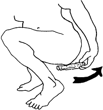

If the woman has a bladder infection, she should drink 1 glass of liquid every hour while she is awake to help wash the infection out of her body. Cranberry juice, cornsilk tea, or other home remedies often work.
If she does not start to improve quickly, or if she has any signs of a kidney infection, give antibiotics.
Antibiotics for bladder and kidney infection:
Give 500 mg amoxicillin by mouth 3 times a day for 7 days. If she is allergic to amoxicillin or penicillin give 960 mg cotrimoxazole by mouth 2 times a day for 7 days. But do not give cotrimoxazole in the last 3 months of pregnancy.
Prevention:
 Wipe from front to back after urinating or passing stool to keep germs away from the pee hole. Remind women's partners to clean their hands and genitals before sex. Women should also urinate right after having sex.